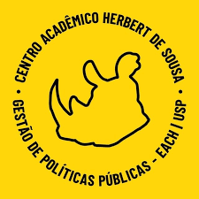

OUTUBRO DE 2026
Solicitação de apuração do Conselho Fiscal
Alguns esclarecimentos sobre a solicitação da Presidência e da Tesouraria de um parecer e de uma investigação do Conselho Fiscal sobre inconsistências na conta da entidade.

CAHSCENTRO ACADÊMICO
Plataforma criada pela Diretoria do CAHS, por meio da Tesouraria, para você acompanhar todas as movimentações financeiras da entidade e entender como seus recursos são administrados.
Bem-vindo, gppista! Esse é o portal oficial de transparência financeira do Centro Acadêmico Herbert de Sousa. Aqui qualquer estudante pode consultar as entradas e saídas, entender de onde vêm os recursos, acompanhar para onde são destinados e verificar a evolução do caixa. O site também disponibiliza informações administrativas do CAHS.
Publicamos o resumo financeiro, os gráficos mensais e o centro de custos para comparar receitas, despesas e saldos de cada período.
Você também pode usar os filtros por data, categoria e objeto para explorar as movimentações e exportar a tabela em CSV como preferir.
Também deixamos disponíveis os documentos institucionais, os eventos recentes e as medidas de prestação de contas do CAHS.
Importante: as informações do site são sicronizadas com uma planilha mestre da Tesouraria e atualizadas periodicamente. Os dados só contemplam o ano de 2026. Ver evolução do caixa ↗
Atualizações e esclarecimentos importantes da Tesouraria e Presidência do CAHS.
Alguns esclarecimentos sobre a solicitação da Presidência e da Tesouraria de um parecer e de uma investigação do Conselho Fiscal sobre inconsistências na conta da entidade.
Pra entender todo o trabalho das gestões do CAHS em regularizar seu CNPJ e abrir sua conta PJ.
Clique na barra para ver todas as movimentações dela
← Deslize para consultar a tabela; use as setas para mudar o mês →
Valores agrupados pelas categorias e objetos dos lançamentos. Caixa acumulado parcial; inclui entradas previstas, indicadas com *.
Cada objeto aparece uma única vez. O valor à direita é a diferença das entradas menos saídas.
CLIQUE em qualquer categoria para consultar todas as entradas e saídas dela na planilha de movimentações.
Entenda onde está localizado cada valor disponível hoje no patrimônio do CAHS.
O total exibido no topo do site também considera os R$ 6.000,00 aplicados em rendimento.
Consulto todas as movimentações, filtre a planilha e exporte sua seleção.
Todas as entradas e saídas do cahs
Ao clicar no CSV, você exporta somente os resultados filtrados, na ordem escolhida e com as colunas visíveis.
Resultado trimestral
Último trimestre com registros
Você pode passar o mouse ou toque nas curvas para consultar os valores. No celular, deslize para navegar pelo período.
A linha de resultado mostra receitas acumuladas menos gastos acumulados. As outras duas linhas mostram receitas e gastos acumulados. O gráfico reúne todos os lançamentos desde o início da gestão. A base é R$ 0,00 antes do primeiro registro; os repasses da gestão anterior já estão incluídos como entradas. O saldo é calculado pelos lançamentos disponíveis e ainda depende de conciliação com os documentos de origem. A comparação usa o resultado do trimestre anterior: (resultado atual − anterior) ÷ |resultado anterior| × 100. Sem registros em um dos períodos ou com base anterior zero, o percentual não é calculado. A comparação usa somente os lançamentos disponíveis em cada período.
| Período | Entradas | Saídas | Variação | Saldo do caixa |
|---|
O documento mais importante do CAHS: define seus princípios e a forma que ele se estrutura.
Complementa o Estatuto e detalha o funcionamento interno, as atribuições dos departamentos e os procedimentos do CAHS.
Reúne orientações para a gestão dos recursos, os procedimentos da Tesouraria e a história financeira da entidade.
Caso encontre inconsistências ou erros, contacte a Diretoria ou a Presidência, ou mande uma mensagem para o CAHS no Instagram.